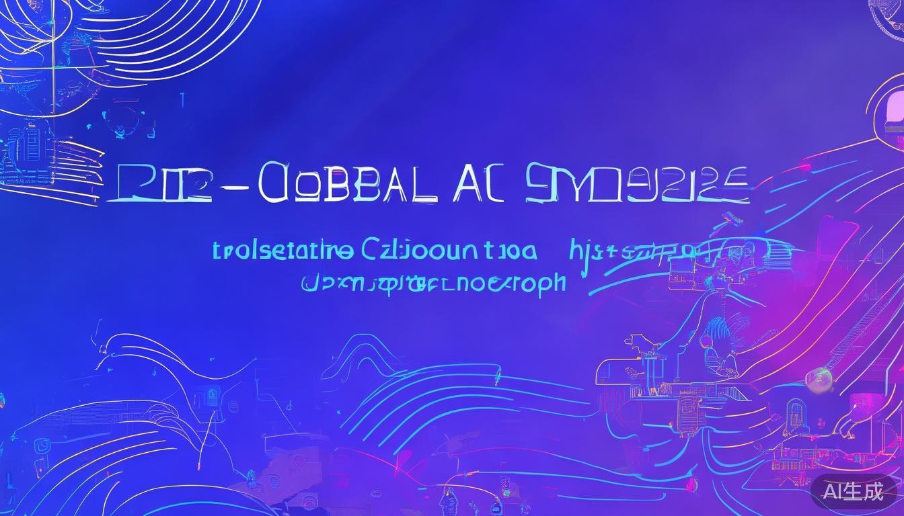

中国 AI 政策 与 国外对 AI 的重视（2026）
这一章把「政策」这条主线讲清楚：AI 已经不只是技术，而是国家竞争与治理议题。
一、中国：从「百模大战」走向「立法 + 落地」
2026 年的中国 AI 政策有几条清晰的主线：
- 加快《人工智能法》立法进程（国家发改委 2026 年 7 月表态）：统筹发展与安全，提供「中国特色的 AI 治理方案」。
- 「人工智能 +」落地：工信部印发《「人工智能+信息通信」创新发展实施意见（2026—2028 年）》，部署具体任务与量化目标。
- 配套监管：已出台《人工智能科技伦理审查与服务办法》《人工智能拟人化互动服务管理暂行办法》等。
- 自主可控：指导国产大模型适配国产算力芯片，聚焦大模型基础理论、训练推理效率、多模态、智能体。
数据面：AI 相关行业保持 30% 以上的高增长。
二、国外：从「竞争」走向「结盟」

- 美国提议欧盟签署 AI 伙伴关系（2026 年 6 月）：核心是半导体供应链安全、监管协调、研发合作。
- 超 30 国加入半导体供应链安全倡议，应对与中国的竞争。
- 美国限制外国公民使用 Anthropic 最新模型，凸显「技术依赖 + 安全焦虑」。
- 欧盟推动「有利于创新的监管」，并加快与美国协调。
三、共同主线：发展 + 安全
无论中国还是欧美，2026 年的 AI 政策都围绕两条线并行：
- 发展：抢算力、抢模型、抢应用落地。
- 安全：伦理审查、风险监测、供应链安全、出口管控。
对普通人的启示
AI 已被各国当成「新型基础设施」来对待。对个人来说，这意味着：AI 技能正在从「加分项」变成「基础项」，越早把 AI 用进自己的工作和创作，越早吃到这轮政策与产业的红利。
本文由本站 AI 创作整理，内容基于公开知识/官方资料提炼，信息请以官方发布为准； 涉及的历史事件、产品与数据均可在公开渠道查证，本站不编造来源。引用外部内容遵循其原始许可，标注出处即可。
2026-09-03 · 今日 AI 进展
2026-09-03 · 今日 AI 进展
当日国内产业政策端最值得记录的动态，是工业和信息化部正式印发《人工智能与制造业深度融合赋能新型工业化行动计划（2026—2028年）》，这是继《新一代人工智能发展规划》《生成式人工智能服务管理暂行办法》之后，我国面向AI实体落地领域出台的又一纲领性文件，与本章讨论的中国AI政策体系形成直接呼应。文件明确提出到2028年要建成30个以上AI赋能制造业的国家级标杆场景，在装备制造、电子信息、原材料、消费品等重点领域推广不少于500个成熟应用方案，同时配套提出算力券补贴、大模型行业适配测评、中小企业AI工具普惠供给等具体支持措施，标志着我国AI政策从前期的技术研发支持、合规框架搭建，正式进入规模化产业落地的推进阶段。
国际层面当日的核心动态是欧盟委员会正式公布《AI法案》实施后的第三批高风险AI系统合规清单，将工业控制类AI、公共就业服务类AI纳入强制合规范围，要求相关系统在2027年6月前完成透明度、鲁棒性、数据来源可追溯等方面的合规评估。对比中欧政策节奏可以发现，当前全球主要经济体的AI治理已经形成共识：一方面持续加大对前沿AI技术研发的投入支持，另一方面针对不同应用场景的风险等级搭建分层分类的监管规则，既避免过度监管抑制技术创新，也防止技术无序应用带来公共安全、就业公平等领域的风险，这种“发展与安全并重”的治理逻辑，已经成为中外AI政策的共同取向。
当日行业层面还有两项可核验的落地进展，清晰体现了政策引导下的AI产业发展方向：
- 国家人工智能标准化总体组发布《大模型行业应用成熟度评估规范》系列标准的征求意见稿，首次针对制造、医疗、教育三个重点领域提出量化评估指标，为后续政策落地、项目验收、企业选型提供统一的技术依据；
- 美国国家标准与技术研究院（NIST）更新AI安全测评框架2.1版本，新增针对多模态大模型生成内容溯源、边缘AI设备安全的测评条目，其技术指标与我国此前发布的生成式AI安全标准存在多项共通点，为后续跨国AI治理协作预留了规则对接空间。